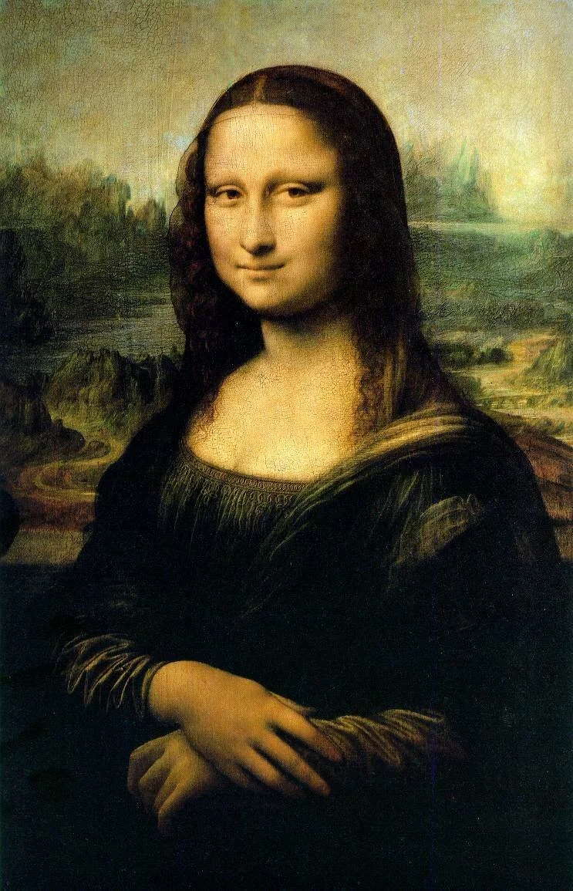
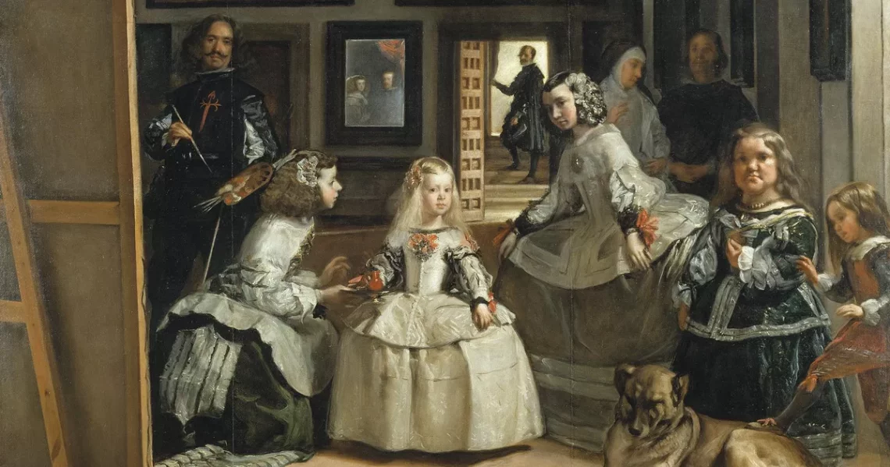
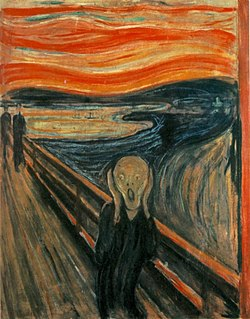
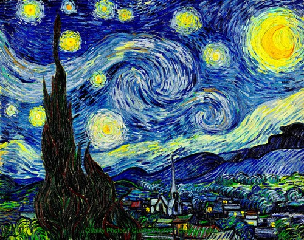

Bienvenido a la galería de StudioArt-e. Aquí podrás ver nuestras últimas exposiciones y obras de arte.

Es un retrato de medio cuerpo pintado al óleo
sobre una tabla
de madera de álamo.
La obra es el ejemplo máximo del humanismo
renacentista,
donde el ser humano es el centro del universo.

Es una obra maestra del pintor español Diego Velázquez,
creada en 1656.
La pintura es un retrato de la infanta
Margarita Teresa, rodeada de sus damas de honor,
su perro, un enano y el propio Velázquez, quien
se autorretrata pintando la escena.
La obra es conocida
por su compleja composición y el uso magistral de la luz y la perspectiva.

Es una obra maestra del pintor noruego Edvard Munch, creada en
1893.
La pintura representa a una figura humana con una expresión
de angustia y desesperación,
con un fondo de un cielo rojo y turbulento.
La obra es considerada una de las más importantes
del movimiento expresionista
y ha sido interpretada como una representación de la ansiedad
y el miedo existencial
del ser humano.

Es una obra maestra del pintor neerlandés Vincent van Gogh, creada en 1889.
La pintura representa una vista nocturna desde la ventana de su habitación en el asilo
de Saint-Rémy-de-Provence,
con un cielo lleno de estrellas y un pueblo tranquilo en el fondo.
La obra es conocida
por su uso vibrante del color y su estilo postimpresionista, que transmite una sensación
de movimiento y emoción.